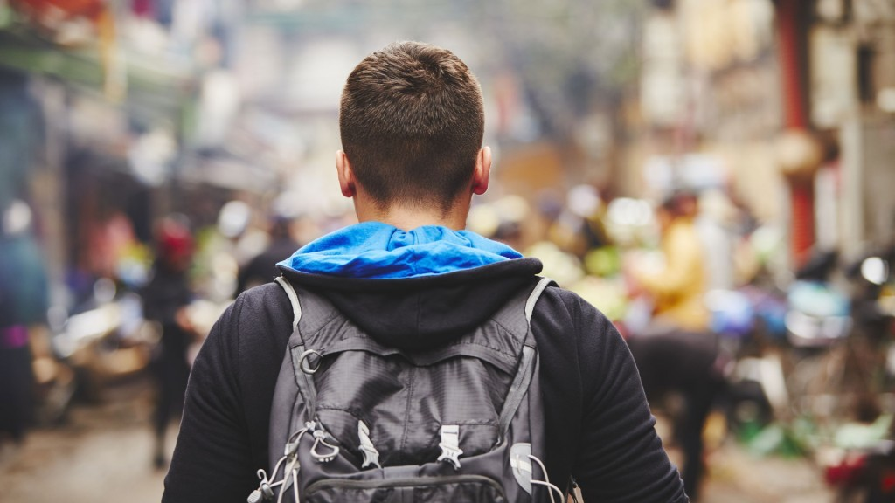
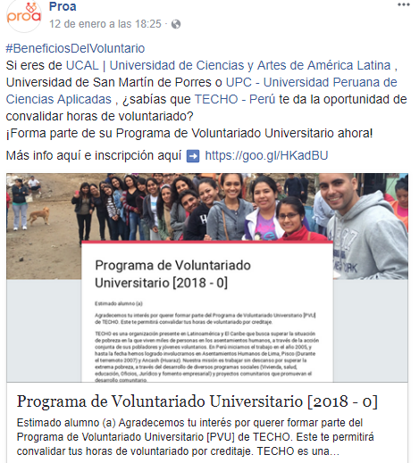
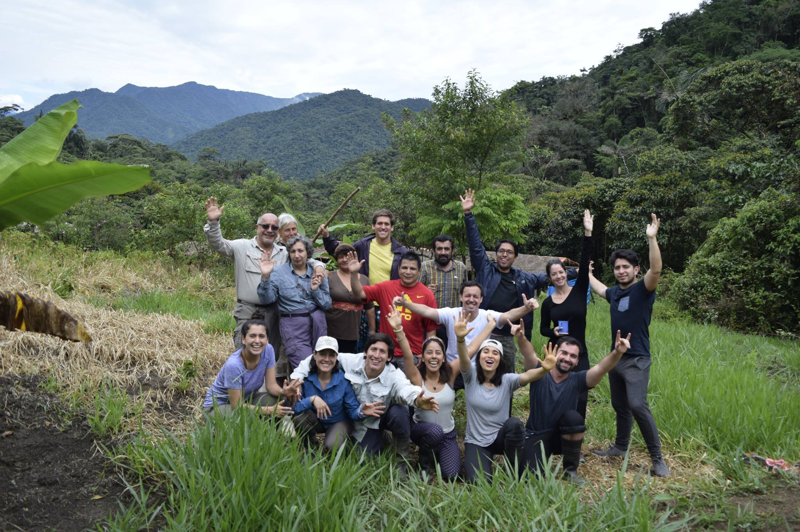

Juan Ramos

Ser voluntario me ha hecho crecer mucho como persona. Me gusta aportar algo a los demás y tratar de ser útil a gente que lo necesita.
-
Voluntariado en Orfanatos (Ayacucho) Existen dos tipos de Orfanatos en los que el participante puede apoyar. El primero es para niños abandonados o huérfanos de edades entre 1 semana de nacidos hasta 2 años de edad y el el orfanato para niños entre 2 a 17 años de edad, en el cual hay aproximadamente 70 niños y niñas. Los orfanatos proveen refugio, además brinda atención y alimentación a los niños. Los voluntarios podrán ayudar en diferentes áreas del orfanato como en el cuidado y atención de los niños, así como también podrán jugar con ellos, asistir en su labores escolares, ayudar en la preparación de sus comidas, alimentarlos, etc.
-
JoalbertJuan, me parece una estupenda oportunidad. Coordinemos con los chicos de la promoEl miércoles 11 de octubre en conjunto con el área de Asuntos Corporativos de Mondelēz, realizamos una jornada de talleres educativos y mejora de infraestructura donde 50 voluntarios de la empresa, tuvieron la oportunidad de compartir sus habilidades con más de 20 niños del Centro de Atención Residencial (CAR) Lazos de Amor, ubicado en Pueblo Libre. El CAR Lazos de Amor alberga a niños, niñas y adolescentes en situación de abandono, brindándoles educación y vivienda, sin embargo, debido al bajo presupuesto, aún tienen algunos problemas de infraestructura y no tienen la posibilidad de desarrollar muchas actividades extracurriculares.